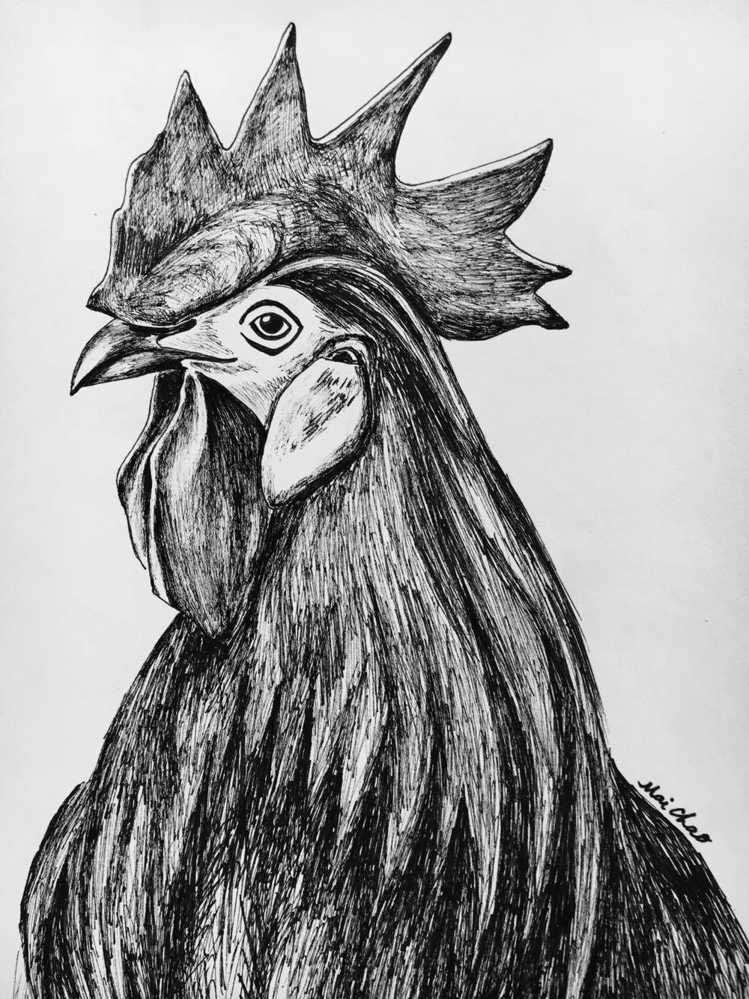
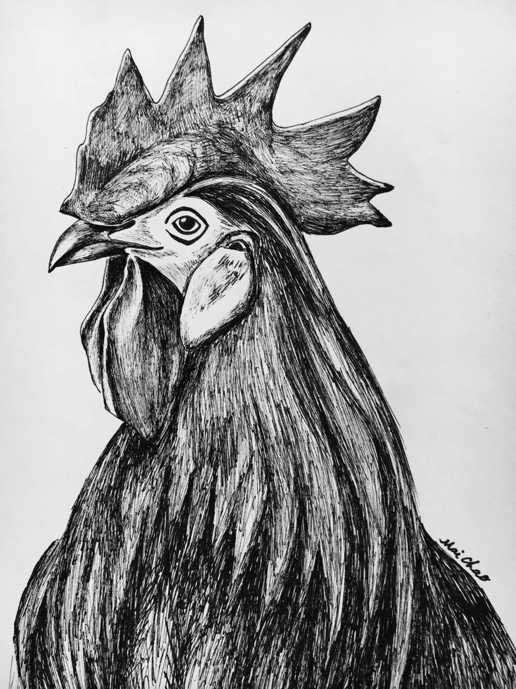

Writings
Samples of Upcoming Works
 

Chapter 1
“Er-er-Er-ERRRR! Er-er-Er-ERRRR! Er-er-Er-ERRRR!” The distinct crow of a powerful rooster breaks through the stillness in a village. A sliver of moon peeks through thin clouds above Lao Kai’s crown when he jumps awake from a sudden disturbance. The morning air is crisp, clean, and refreshing high in the mountains. His needle-sharp talons grasp firmly onto an old tree stump as the onset of morning approaches. Upon hearing Papa’s daily morning crows, Lao Kai feels a deep happiness and reassurance knowing the familiarity of life in his village. For a second, he sees himself like Papa as a Village Rooster, but the idea disappears quickly. It is too much of a responsibility for him to carry on his young shoulders. Feeling a bit chilled by his own thoughts, Lao Kai looks at the chicken house. He sees Papa standing proudly erect like a tree, holding his head high to give another waking call to villagers and Yer Shao’s creatures for a new day to begin.
Poetry
Filter by:
Woman
A woman’s unruffled face reflects on the pond’s surface at the Friendship Garden. She feels braver after taking down her curtain of insecurity, then adorning her skin in a comfortable robe of self acceptance. She breaks away from the chains of life where dreams are possible. She gives herself wings to fly like fireflies on moon dust nights. She speaks up even when her voice shakes, stands tall before criticism. She loves wholeheartedly, camouflages melancholy like a magenta raven in flight. She rediscovers beauty, worth, like a long lost friend. She bonds amicably with those who love her, no strings attached. She learns compassion, loving her inner self, children, nature, imperfections. She grows richly inside, reclaiming a new identity. A woman’s unruffled face reflects on a pond’s surface at the Friendship Garden. Is that my face reflecting back? So much lies beneath the surface.
Copyright @ Mai Chao, 2/24/2017
Culture
Culture was once hazy like a darkening sky on the western front, thin ominous clouds passing over. Now, I stand at an intersection of the past and the present, heart racing to find meaning, purpose, a place to belong. Bit by bit, I flourish, springing up from the hard-packed earth. Sheltered life breaks free, a quiet girl grows wings with hopes and dreams. My mother tongue rusty with neglect. Language speaks to the fibers bury generations deep within me. I am meant to make my world kinder, to continue culture. I build a home within myself, not without loving hands, blood, tears of those who came before. I remember comfort. Mother’s sweet rice with green mustard, Father’s fried fish and sticky rice, the intoxication of delightful smells enveloping every wall with familiarity. I see contentment in wearing white pleated skirt, black velvet jacket, rooster crown hat, French coins dancing blithely during New Year celebrations. Coming full circle by having my children, I acknowledge culture. Being together without having to explain, a silent gift for who we are as mortals. Culture, rich like words, scrumptious like nourishment, bold like garments, withstanding the test of time. Yet, I had to learn to receive these lasting ancestral gifts. Today, culture is no longer hazy, but like sunshine blooming upon the eastern horizon.
Copyright @ Mai Chao, 2/24/2017